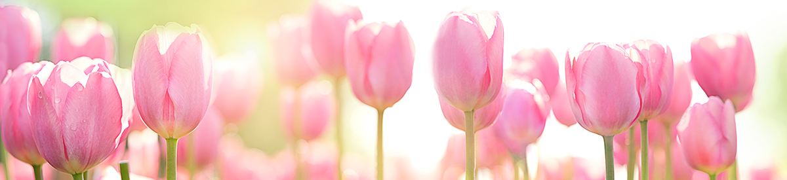

 There are over 150 species of tulips with over 3,000 different varieties and are part of the lily family. Like most common flowers, tulips come in a large variety of colors that each have their own meaning. As a signal of the arrival of spring, these blooms are often associated with the Easter holiday. Tulips were at one point more valuable than gold in Holland during a period of “Tulip Mania” and their popularity has only spread with time! Tulip bulbs should be planted in the fall in areas where they can receive partial to full sun. Tulips will fare better in soil that allows for drainage since over watering will drown the bulb and roots. Tulips are known for their bold colors and beautiful shape, and most varieties are indeed almost perfectly symmetrical. The blooms have three petals and three sepals, but since the sepals are almost the same size and shape as the petals, tulips appear to have six petals to a bulb.
Carnations come in 3 different types: large flowered carnations, spray carnations, and dwarf flowered carnations. Large flowered carnations can grow to over 20 inches high with one large bloom per stem. These are also referred to as the florist’s carnation. Spray and dwarf carnations have smaller blooms but have multiple blooms per stem. These carnations grow to 12 inches and are more commonly found in gardens. When planting carnations take care to plant in a well-draining soil and in an area with ample sunlight. Carnations can have different meanings depending on their color – a pink carnation symbolizes motherly love, a white carnation means good luck, a yellow carnation means disappointment, etc. Their versatility has made them an extremely popular flower for all occasions.
Daisies are found on every continent other than Antarctica and belong to one of the largest known plant families. Daisies symbolized innocence, a connotation that comes from the Victorian era. Based on what color the daisy is, the flower can take on another meaning. Daisy flowers prefer full sun and average soil conditions. Depending on the variation, they can grow to anywhere between 8 inches to 4 feet. Care tip: only water during the summer only if rainfall is less than 1 inch per week. Daisies symbolize innocence and purity. ... In Norse mythology, the daisy is Freya's sacred flower. Freya is the goddess of love, beauty, and fertility, and as such the daisy came by symbolize childbirth, motherhood, and new beginnings. Daisies are sometimes given to congratulate new mothers.
The fifth most popular flower in the world, the Gerbera Daisy comes in a full rainbow of colors, including pink, orange, yellow and red. The Gerbera was discovered in 1884 in South Africa then it was brought to England, where breeders grew a variety of Gerberas that boasted brighter colors and sturdier quality. The popularity of Gerberas slowly spread to the Netherlands, which became one of the biggest Gerbera daisy distributors in the world—a title it still holds today. Its vibrant petals make it the flower of choice for celebrating every happy occasion, from birthdays to weddings. Good news for cooler climate gardeners is the Garvinea series are hardy perennials that keep coming back year after year in Zones 7-10. Gerberas like some sun but they're not cacti; they don't relish intense heat. Northerners can grow the daisies in full sun if the air temperatures are cool
The cheerful petunia, a staple of old-fashioned gardens, planters, and hanging pots, is more vivid than ever with red, yellow, pink, purple, lavender, white, multicolored, or striped blossoms. They are reliable flowers that will bloom from spring through autumn if grown in the sun and deadheaded consistently. Many of them feel sticky to the touch due to sap that is exuded from the plant tissues to protect them from insect pests. Petunias are native to South America and are related to tomatoes, peppers, eggplants, and tobacco. Petunias tend to die back towards the end of summer or into autumn. At this stage, most plants can be removed to make room for autumn and winter plantings. Perennial forms can be cut back at this time and may regrow and re-flower in spring.
Snapdragon flowers, shaped like little dragon snouts, are native to the United States, North Africa, and Europe, and have been widespread posies for centuries. Their flowers bloom from the bottom to the top of tall stalks in the summer and fall and come in yellow, peach, pink, orange, purple, red, white, and bicolor. Snapdragons are picky about their pollinators! Large bumblebees are the only insects that are strong enough to open the upper and lower lips of the snapdragon flower to crawl inside to drink the nectar and inadvertently cover themselves in pollen. n many areas, snapdragon seeds will survive low winter temperatures, and new plants will grow from these seeds in spring, making the plant seem as if it came back like a perennial. ... Because of their short-lived nature, perennial snapdragons tend to be grown as annuals and are replanted every year.
Gardenia’s are most famous for their scented and waxy white flowers that can bring a garden to life. Depending on your geographical location (and personal preference) you get to decide whether your gardenia will live indoors or outdoors. To ensure that your gardenias bloom throughout their growing season, keep the soil well drained and at a pH of 4.5 to 5.5 regardless of whether they are planted in a pot or outside in the garden. These plants also need ample amounts of water, so make sure to never let your gardenia dry out – water regularly.
Lillies are one of the most popular and versatile flowers in the world. Coming in a variety of colors and known for their strong fragrance, this elegant bloom is a show-stopper on its own while also serving as the perfect complement to any bouquet. In fact, lilies are one of the most popular flowers in the world. There are over 100 different types of true lilies belonging to the “lilium” genus. Lilies are found dominantly in the Northern Hemisphere of the world.The lily is an every occasion flower since it is so versatile in mixed bouquets or standing alone.
Alstroemerias are more often called either Peruvian Lilies or Lilies of the Incas and are native to South America. Peruvian Lilies come in a variety of warm colors like pink and orange and are symbolic of friendship, wealth and devotion. These flowers bloom in late spring/early summer when exposed to direct sunlight and watered weekly (water more often when you notice soil looking dry, water less when the soil looks soggy). Ther were also used in the bouqiues and also in the decoration of functions